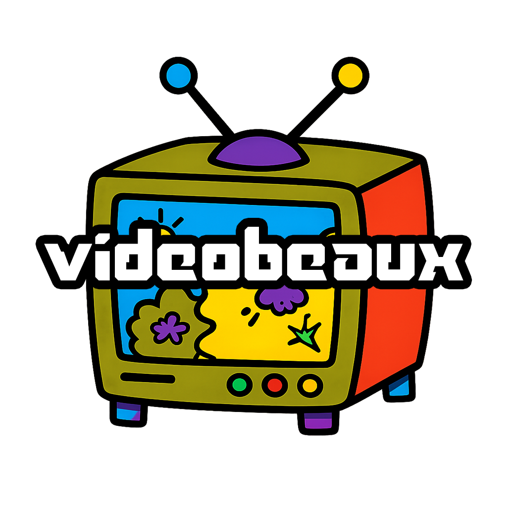
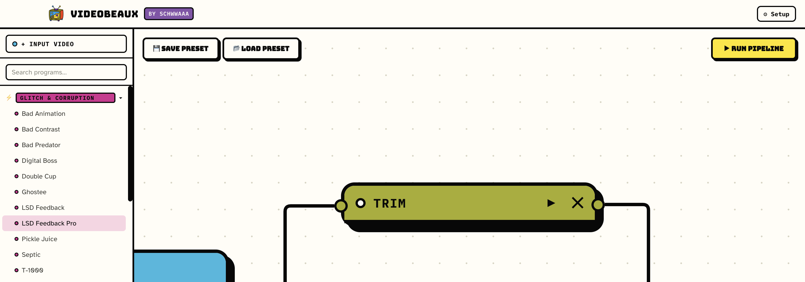

Bring your footage.
Choose a video, or point your input at a folder for a batch.
Break it. Bend it. Clean it up. Connect effects in a visual playground and turn your footage into something unmistakably yours.
Local processing · No account · AI optional

Start with footage. Add the effects you want. Connect them to an output and hit Run. A little structure. A lot of possibility.

Your entire pipeline, in one place. Save it as a preset and come back for another round.
Choose a video, or point your input at a folder for a batch.
Add effects, tune their settings, and connect or branch your processing nodes.
Render the result on your machine. Save the setup to use again.
Drag the divider to reveal the original on the left and the processed video on the right. Both share one playback timeline.
Processed demo: Bad Predator. Select its matching original, or choose two of your own videos. Local files stay in your browser.
For an accurate comparison, use matching framing and duration. This preview is muted.
Explore glitch, corruption, frame stutter, and temporal effects. Push footage somewhere unexpected.
Combine layers, build layouts, key backgrounds, and add watermarks.
Convert formats, trim clips, adjust color, and bring HDR into an SDR workflow.
Pull out frames, create thumbnail sheets, and use transcripts to find or reshape spoken moments.
Save the whole graph as a preset. Run the same setup across a folder of videos.
Add captions and narration. Enable local speech and AI tools when they suit your project.
Video processing happens on your computer. No cloud uploads, accounts, or telemetry. Once setup and any optional model downloads are complete, get to work offline.
The core toolkit works without a language model. Optional features can use local models for narration scripts or highlight ranking.
Use Videobeaux alongside your editing app: prepare footage, explore an effect, or batch a repeatable task, then bring the results into your edit.
Find available desktop builds and release notes on GitHub. Start with the visual canvas and make your first connection.
Check each release for supported platforms and installation notes.